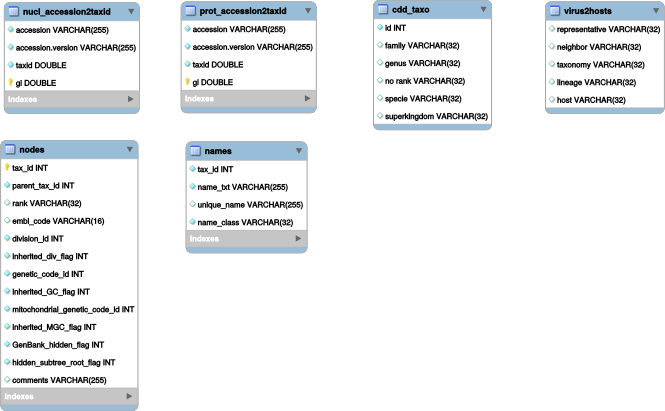

Prerequisite¶
External programs¶
- NCBI Blast+ suite (ftp://ftp.ncbi.nlm.nih.gov/blast/executables/blast+/LATEST)
- SQLite (https://www.sqlite.org/)
- Mummer3 (http://mummer.sourceforge.net/)
- Bowtie2 (http://bowtie-bio.sourceforge.net/bowtie2/index.shtml)
- Cutadapt (https://github.com/marcelm/cutadapt)
- ETE tree (http://etetoolkit.org/)
- IDBA-UD (https://github.com/loneknightpy/idba)
- drVM (https://sourceforge.net/projects/sb2nhri/files/drVM/)
- Open Grid Scheduler (http://gridscheduler.sourceforge.net/)
- Diamond (https://github.com/bbuchfink/diamond)
External databases¶
- NCBI nr, nt (ftp://ftp.ncbi.nlm.nih.gov/blast/db/)
- NCBI Taxonomy (ftp://ftp.ncbi.nih.gov/pub/taxonomy)
- PFAM (ftp://ftp.ebi.ac.uk/pub/databases/Pfam/current_release/) (rpsblast files, fasta files, and smp files)
Perl external libraries¶
- Getopt::Long
- File::Basename
- DBI
- Data::Dumper
- Bioperl
- Color::Rgb
- List::Util
- Excel::Writer
- Log::Log4perl
- DBD::SQLite
- SQL::SplitStatement
- Math::Round
Perl included libraries¶
- Tools::Fasta
- Tools::Fastq
- Tools::Blast
- Tools::Taxonomy
- Logger::Logger
Python library¶
- os
- call
- logging
- random
- string
- argparse
- re
- sys
- Bio
- time
- glob
- shutil
- yaml
- csv
- importlib
- matplotlib
Install¶
Add tools and launchers folders to your $PATH.
export PATH=/path/to/tools:/path/to/launchers:$PATH
Add lib folder to your $PERL5LIB.
export PERL5LIB=/path/to/lib:$PERL5LIB
Database¶
NCBI taxonomy and the homemade per domain Pfam taxonomy are stored in a simple SQLite database.
Schema:
NCBI Taxonomy¶
- Download and extract NCBI taxonomy files.
wget ftp://ftp.ncbi.nlm.nih.gov/pub/taxonomy/taxdump.tar.gz ; gunzip taxdump.tar.gz; tar -xf taxdump.tar;
wget ftp://ftp.ncbi.nih.gov/pub/taxonomy/accession2taxid/prot.accession2taxid.gz ; gunzip prot.accession2taxid.gz;
wget ftp://ftp.ncbi.nih.gov/pub/taxonomy/accession2taxid/nucl_gb.accession2taxid.gz ; gunzip nucl_gb.accession2taxid.gz;
Optionally you can combine multiple accession2taxid file with a simple cat. But keep separated nucl and prot accessions as they will be loaded in two different tables.
wget ftp://ftp.ncbi.nih.gov/pub/taxonomy/accession2taxid/dead_prot.accession2taxid.gz ; gunzip dead_prot.accession2taxid.gz;
cat prot.accession2taxid dead_prot.accession2taxid > acc2taxid.prot
wget ftp://ftp.ncbi.nih.gov/pub/taxonomy/accession2taxid/nucl_wgs.accession2taxid.gz ; gunzip nucl_wgs.accession2taxid.gz;
wget ftp://ftp.ncbi.nih.gov/pub/taxonomy/accession2taxid/dead_wgs.accession2taxid.gz ; gunzip dead_wgs.accession2taxid.gz
cat nucl_wgs.accession2taxid nucl_gb.accession2taxid dead_wgs.accession2taxid > acc2taxid.nucl
Launch the loadTaxonomy.pl script that will create the sqlite database. The script needs two provided sqlite files: taxonomyIndex.sql and taxonomyStructure.sql that describe the database struture.
loadTaxonomy.pl -struct taxonomyStructure.sql -index taxonomyIndex.sql -acc_prot acc2taxid.prot -acc_nucl acc2taxid.nucl -names names.dmp -nodes nodes.dmp
PFAM taxonomy¶
The pipeline modules rps2ecsv and rps2tree need taxonomic information of the PFAM domains to work.
You need to extract these informations and load it into the sqlite database.
- Extract taxonomic information for each sequence of each PFAM domain and store it in
*.tax.txtfiles:
\ls -1 *.FASTA | sed 's,^\(.*\)\.FASTA,gi2taxonomy.pl -i & -o \1.tax.txt -r,' | bash
- Create a file of file for the
*.tax.txtfiles:
listPath.pl -d . | grep 'tax.txt' > idx
- Compute taxonomy statistic for each domain and create a sql file to load into the database:
taxo_profile_to_sql.pl -i idx -o taxo_profile.sql
- Load into the database:
sqlite3 taxonomy.tmp.sqlite < taxo_profile.sql
NCBI Blast database¶
NCBI non redundant databases are very large and similarity search using Blast is an intensive task. I recommand to use those databases on computer clusters.
- Download NCBI nr et nt Blast files.
wget ftp://ftp.ncbi.nlm.nih.gov/blast/db/nr.*.tar.gz
wget ftp://ftp.ncbi.nlm.nih.gov/blast/db/nt.*.tar.gz
Modify the parameters.yaml to fit your configuration.
servers:
genotoul:
adress: 'genotoul.toulouse.inra.fr'
username: 'stheil'
db:
nr: '/bank/blastdb/nr'
nt: '/bank/blastdb/nt'
Reduced databases are a good choice for limited computer ressources and drastically faster similarity search. Here are some example commands using NCBI tools to download sequences.
- Reduced NCBI databases:
Get all viroids nucleotide sequence from genbank:
esearch -db "nucleotide" -query "txid12884[Organism]" | efetch -format fasta > viroids_nucl.fna
Get all viruses nucleotide sequences from genbank:
esearch -db "nucleotide" -query "txid10239[Organism]" | efetch -format fasta > viruses_nucl.fna
Create Blast DB example:
makeblastdb -in viruses_nucl.fna -parse_seqids -dbtype nucl
- Download PFAM files for RPSBLAST.
wget ftp://ftp.ncbi.nih.gov/pub/mmdb/cdd/little_endian/Pfam_LE.tar.gz
wget ftp://ftp.ncbi.nih.gov/pub/mmdb/cdd/fasta.tar.gz
wget ftp://ftp.ncbi.nih.gov/pub/mmdb/cdd/cdd.tar.gz
Here I use only PFAM domains but fasta.tar.gz and cdd.tar.gz contains files for the entire CDD database. You can either delete files that are not from PFAM database or use the complete CDD.
- Delete file that are not from PFAM:
\ls -1 | grep -v 'pfam' | sed 's,^.*$,rm &,'
Add ‘| bash’ if correct.
- Download entire CDD database:
wget ftp://ftp.ncbi.nih.gov/pub/mmdb/cdd/little_endian/CDD_LE.tar.gz